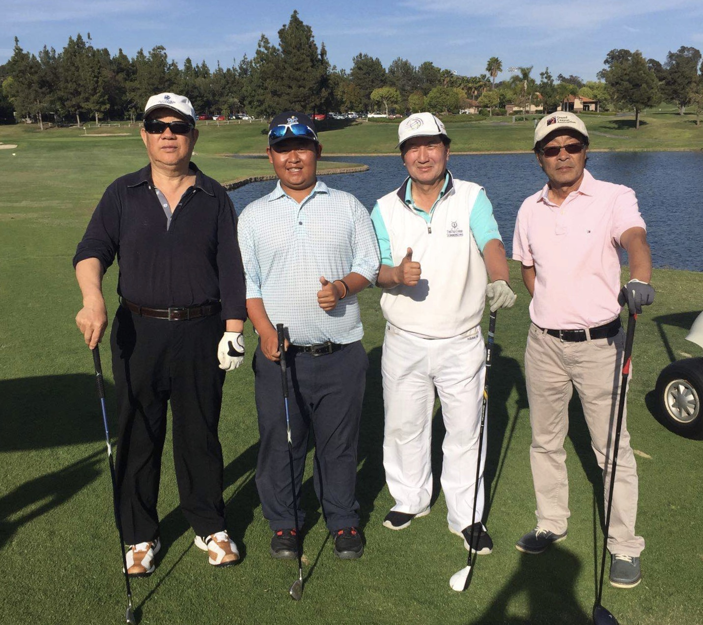

North America Chinese Writers Association Los Angeles
如同天各一方,偶爾邂逅的青年男女一見鍾情那樣。沒想到根本不愛體育運動的我,
只看了一次打高爾夫球,就會對它一往情深。
那是多年前在中國，我和一位多年不見的朋友相聚在北京。一天，我倆和另外幾個朋友在一起喝茶聊天。其間朋友與球友相約第二天去打高爾夫球，並約我也一起去。反正閒著也是閒著，我就去了。
這是我第一次進高爾夫球場。穿過高聳林立的樓群和車水馬龍的街道,
汽車駛入西北四環附近，在一處樹木遮掩的低層建築前停下。
進入球場，我舉目環視,感覺像是進入了美國的社區公園:碧綠的草坪象鋪滿山丘的地毯;彎曲的小河靜靜地從草叢邊流過。清新的草香,
靚麗的風景,一片詩情畫意。我隨著朋友走走停停，一邊觀看朋友的朋友揮桿打球，一邊聽朋友給我講高爾頭球的打法、規則、禮儀等常識。
看著他們打完第一洞，下了果嶺，一轉方向，又是一個依地勢起伏的球道展現在我的眼前，他們又開始了第二洞的比賽。
看他們打了幾個洞之後, 我忽然覺的這種玩法似曾相識——童年時與小夥伴們打玻璃蛋兒不也是這樣玩嗎？也是在土坡上挖幾個剛能容下玻璃蛋兒的小洞，也是在不遠處劃一條線，然後依次把玻璃蛋兒彈出，看誰先讓球滾入坑里，彈玻璃球時也是要考慮坡度、力度。只不過小時候是一群小夥伴，趴在黃土地上用拇指和食指彈那小玩意兒，玩上一會兒就會弄得灰頭灰臉滿身塵土。而打高爾夫球是成年人站在綠草坪上,用球桿打這包著塑料的橡膠球,
打上一天仍衣帽整潔。 十八個洞沒打完我就有了興趣,
想著回到美國後,也學學打高爾夫球, 豐富一下單調的生活。 其實, 多年前在美國,兒子就曾建議我去學打高爾夫球。但我卻從未動心過，甚至連進場地看高爾夫球是怎麼打的興趣也沒有。這倒不是我對打高爾夫球有偏見,而是近年來我對任何體育項目都不熱心。雖然也曾對游泳、滑冰、打乒乓球、打蘭球、射擊、長跑愛好過一陣子。但這些都是結婚以前的事了。自從有了小家,我就沒讓自己以鍛鍊為名,一個人出去偷清閒。
一晃幾十年過去了,自認為身體很好,無須為健康而刻意鍛鍊。
這次我似乎是下了決心。回到美國,我立刻托朋友幫我找了一個高爾夫教練。又請在Callaway公司工作的朋友，幫忙買了一套球桿，開始接受正規訓練。
學打高爾夫球了才瞭解到, 我居住了十多年的卡爾斯巴德被人們譽為高爾夫球王國。這裡濱臨大海,四季如春,非常適宜戶外運動。我用GPS測了一下, 以我家為中心周邊十英里內,有八個高爾夫球場。過去,只知道美國的體育設施多, 不知道佔地動輒二百多英畝(近千畝)大小的高爾夫球場也這麼多。居住在這裡, 條件這麼好, 卻不充分利用,真是不會生活, 不懂享受。用朋友的話說, 是浪費了資源。
與朋友一起高爾夫球場
我也奇怪，自己在聖地亞哥生活了這麼多年了, 與球場相居為鄰，為什麼就沒喜歡上這項運動呢？一次，我邊練球邊思索,終於找到了答案。那就是在此以前沒進入圈子。
此前我回到家鄉，和一幫子老朋友聚在一起，總是洗澡按摩,喝茶聊天。我們天上地下，古今中外什麼都聊，就是沒人提起過打高爾夫球。這也難怪，因為在我的家鄉,一個轄十六個縣的地級市，方圓百公里內,沒有一個高爾夫球場。我的那些朋友,是另一種活法。
這次學打高爾夫球,我是決心很大, 認為醒悟不在早晚,入門不分先後,只要喜歡,什麼時候開始也能找到樂趣, 也是享受生活。
自以為並不愚笨的我,在專職老師的精心教授下,在家人和朋友的熱情鼓勵中,情緒飽滿,心勁十足. 學的認真,練的刻苦,興趣十分濃厚。
可是, 瞄准並不等於射中,用力大並不見得效果好。上萬個球打出去了,成績卻不盡如我意。至今仍是常常打偏或打不遠,尤其是動作和姿式仍不規範。雖然在與球友的比賽中感受到了打球的樂趣。可時間一久，我不能持之以恆的老毛病就犯了。我打高爾夫球的表現與影視劇中一些官員、大款包二奶的情形竟有些類似:一開始，如漆似膠，天天會面；過上一陣,興趣淡了，偶爾光顧;又過了些日子,來了激情,又難分難捨。熱衷了一個月後，我又少了打球的興趣，而熱衷於寫幾篇小雜感。
我發現我有「三不能」: 一是幹什麼事不能放,一放就沒日子了。去年初冬去了一趟中國,聖誕節前回來後，一忙一放就把練打高爾夫球的事擱置了。學練字、學英語、學拉小提琴都是開始只想先放幾天,一放就是猴年馬月;。二是幹什麼事不能來回想,一來回想就把已定的目標想丟了。本來練球是想以運動促健康。又一想,認識的一同事天天鍛鍊卻英年早逝,於是「生死在命，何必自找苦吃」的想法佔了上風，就放棄了堅持。三是幹事不能要求完美,一追求完美就容易走極端。有幾次想練球卻沒去,都是因為懷疑自己動作不優美,練成壞習慣難以更改，反而由耽心辦錯事,變成乾脆不幹事。
另外, 沒積極尋找有共同愛好的球友,互相督促、互相勉勵，這些都成了我打高爾夫球，三天打漁兩天曬網的原因。
我又想，同樣是打高爾夫球,每個人的心態也未必全都一樣。有的人是享受樂趣; 有的人是發洩壓力;有的為健身;有的為交誼。其實, 不管出於什麼樣的動機,客觀上都會在潛移默化中起到強身健體,陶冶性情的功能。雖然熱一陣,冷一陣,就象一個人要去山頂,卻走一走,停一停,會延長到達目標的時間。但只要選擇的路對,總比有些人透支身體，跑的健步如飛,卻跑錯方向要好。
這使我想起了一位朋友。前年我回到家鄉與他相聚,見面後他就向我傾訴金屋藏姣的煩惱。告訴我,時間久了以後,情人要麼嫌去的少,要麼嫌給的少,要麼嫌不能轉正…….我聽了感慨,；原來包二奶也不全都是幸福。那時,我還沒見識過打高爾夫球, 不知它的魅力所在。下次我回國一定要告訴他:趕快改愛高爾夫吧。它沒有不滿,沒有抱怨,不怕冷落,沒有非分要求。
如今，我已把高爾夫當作情人，從喜歡到愛上了它，並經常約會它,品味它的內在美，享受著它帶給我的快樂。